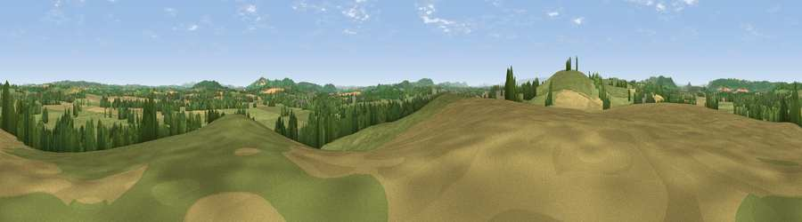

Viewpoint near Sutton St Nicholas
#21130 in England · top 56% of its area beats it · near Sutton St NicholasWhere it is
The exact computed spot (SO 52625 43675). Click the marker for map links.
The view, rendered

A 360° render of this exact spot computed from the terrain model, tree cover and land cover — summer colours, afternoon light, calibrated against photographs of famous viewpoints. Real trees, hedges and buildings will differ in detail.
The panorama
Grey silhouette: terrain skyline in each direction (720 bearings, Earth curvature and refraction included). Dashed green: skyline with trees (+15 m) and buildings (+8 m) as obstacles. Blue strip: how far the ground is visible on each bearing.
Where the view opens
Wedge length = distance to the farthest visible ground on that bearing (vegetation-aware). Rings at 10, 25 and 50 km.
What fills the view
59% grassland · 24% cropland · 15% woodland · 2% built-up
Angular shares of the visible panorama (visual magnitude), not map area. Landscape diversity 0.45 (0–1 Shannon).
Key numbers
More beautiful places nearby
The staircase of upgrades: each row has a higher view potential than everything closer. Driving times are estimates from straight-line distance, calibrated against real road routing — check an actual route before setting out.
| Place | Direction | Drive | Score |
|---|---|---|---|
| Viewpoint near Moreton on Lugg | WSW · 1 km | ~3 min | 64.5 |
| Viewpoint near Dinedor | S · 6 km | ~13 min | 71.8 |
| Viewpoint near Canon Pyon | WNW · 7 km | ~15 min | 74.6 |
| Round Oak Hill | WNW · 8 km | ~16 min | 75.4 |
| Seagar Hill | ESE · 10 km | ~19 min | 82.1 |
| Garway Hill | SSW · 21 km | ~35 min | 84.6 |
| Herefordshire Beacon | E · 24 km | ~39 min | 85.8 |
| Millennium Hill | E · 24 km | ~39 min | 86.9 |
52.08938, -2.69286 · source: screening · position refined by local search. Computed location — check access rights before visiting.